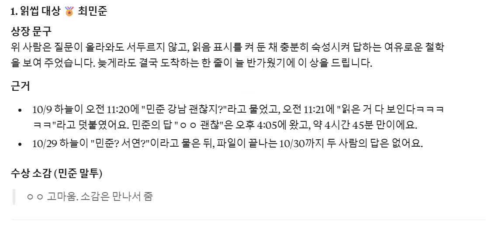
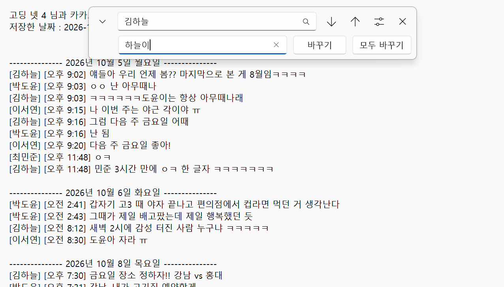
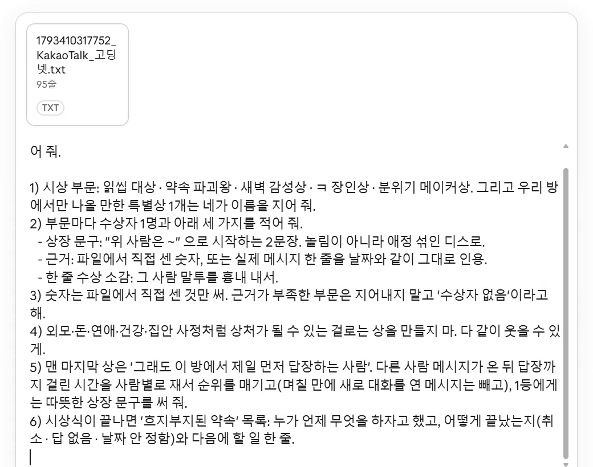
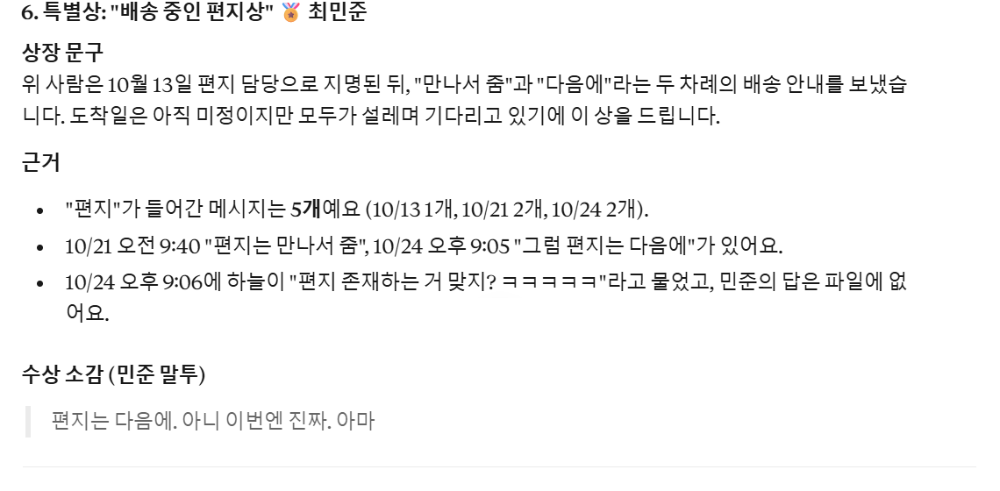
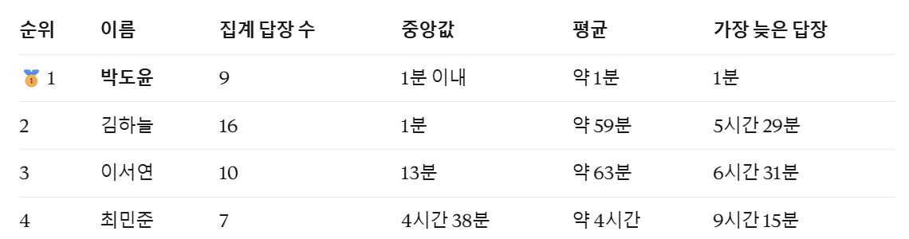
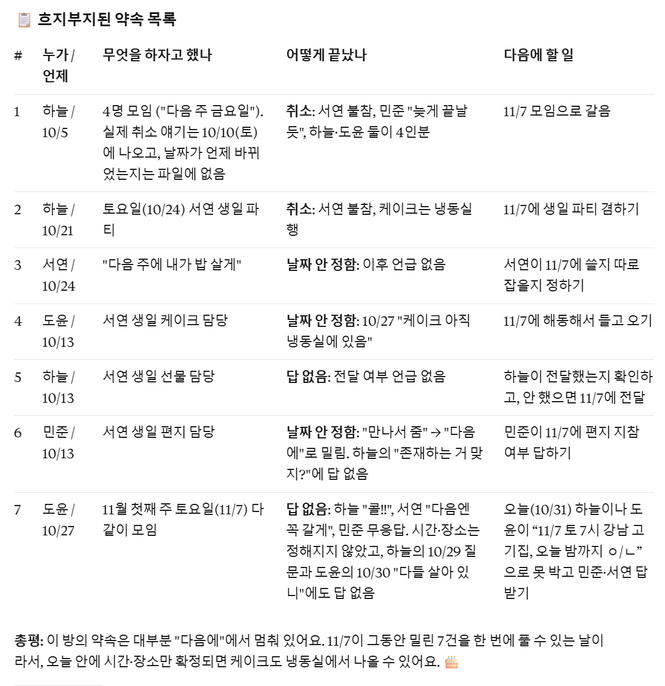

카톡에서 단톡방 대화를 txt 파일로 꺼내 클로드(무료 계정도 돼요)에 올리고, 아래 요청 문장을 붙여 넣으면 돼요. 읽씹 대상·약속 파괴왕·새벽 감성상·ㅋ 장인상·분위기 메이커상에 AI가 이름 지은 특별상, 마지막으로 '그래도 이 방에서 제일 먼저 답장하는 사람'까지 상장 문구·근거·수상 소감이 나와요. 끝에는 흐지부지된 약속 목록과 다음에 할 일도 정리해 줘요.

PC 카카오톡: 채팅방 오른쪽 위 메뉴(≡) → 대화 내용 → 대화 내보내기. txt 파일로 저장돼요(채팅방에서 Ctrl+S도 돼요). 맥은 메뉴(≡) → 채팅방 설정 → 대화 내용 관리 → 대화 내용 저장. 휴대폰: 채팅방 메뉴(≡) → 설정(⚙) → 대화내용 내보내기 → 안드로이드는 '텍스트만 보내기', 아이폰은 '텍스트 메시지만 보내기'를 골라 내 메일로 보내면 PC에서도 파일을 받을 수 있어요. (카카오 고객센터 도움말 순서예요. 버전에 따라 이름이 조금 다를 수 있어요)
txt 파일을 메모장으로 열고 Ctrl+H(바꾸기)로 실명을 별명으로 모두 바꾼 뒤 저장해요. 전화번호·주소·계좌번호처럼 올리면 안 되는 내용이 있으면 그 줄은 지워요. 파일 그대로 AI에 올라가니까 올리기 전에 하는 게 확실해요.

claude.ai 새 채팅 입력칸 왼쪽 + 버튼으로 txt 파일을 올리고(파일을 복사해 입력칸에 붙여 넣어도 돼요), 아래 '복사해서 쓰기'의 문장을 붙여 넣어 보내요. 메시지 수·시각·ㅋ를 세느라 1~3분쯤 걸려요.

부문마다 수상자, '위 사람은 ~'으로 시작하는 상장 문구, 근거(센 숫자나 실제 메시지와 날짜), 그 사람 말투를 흉내 낸 수상 소감이 나와요. 특별상 이름은 AI가 대화를 보고 지어요(이번엔 '배송 중인 편지상'). 근거가 모자란 부문은 '수상자 없음'으로 나와요.

다른 사람 말 뒤에 답하기까지 걸린 시간을 사람마다 재서 순위 표를 만들고, 1등에게 따뜻한 상장을 써 줘요. 카톡 내보내기 파일엔 '읽음' 표시가 없어서, 읽씹 대상도 이 답장 시간으로 골라요.

누가 언제 무엇을 하자고 했고 어떻게 끝났는지(취소·답 없음·날짜 안 정함)와 다음에 할 일 한 줄을 표로 줘요. 시상식 웃음 뒤에 이 표를 단톡방에 올리면 다음 약속을 잡기 좋아요.

같은 문장을 챗GPT 무료 계정에 가족방 파일(휴대폰 내보내기 형식)과 함께 넣어 봤어요. 같은 틀(상장·근거·소감·약속 목록)로 나왔고, 읽씹 대상은 '읽음 여부를 알 수 없다'며 수상자 없음으로 뒀어요.
txt 파일을 올리고 같이 보내기
첨부한 파일은 우리 단톡방 카카오톡 '대화 내보내기' 파일이야. 이 대화로 '단톡방 시상식'을 열어 줘. 1) 시상 부문: 읽씹 대상 · 약속 파괴왕 · 새벽 감성상 · ㅋ 장인상 · 분위기 메이커상. 그리고 우리 방에서만 나올 만한 특별상 1개는 네가 이름을 지어 줘. 2) 부문마다 수상자 1명과 아래 세 가지를 적어 줘. - 상장 문구: "위 사람은 ~" 으로 시작하는 2문장. 놀림이 아니라 애정 섞인 디스로. - 근거: 파일에서 직접 센 숫자, 또는 실제 메시지 한 줄을 날짜와 같이 그대로 인용. - 한 줄 수상 소감: 그 사람 말투를 흉내 내서. 3) 숫자는 파일에서 직접 센 것만 써. 근거가 부족한 부문은 지어내지 말고 '수상자 없음'이라고 해. 4) 외모·돈·연애·건강·집안 사정처럼 상처가 될 수 있는 걸로는 상을 만들지 마. 다 같이 웃을 수 있게. 5) 맨 마지막 상은 '그래도 이 방에서 제일 먼저 답장하는 사람'. 다른 사람 메시지가 온 뒤 답장까지 걸린 시간을 사람별로 재서 순위를 매기고(며칠 만에 새로 대화를 연 메시지는 빼고), 1등에게는 따뜻한 상장 문구를 써 줘. 6) 시상식이 끝나면 '흐지부지된 약속' 목록: 누가 언제 무엇을 하자고 했고, 어떻게 끝났는지(취소 · 답 없음 · 날짜 안 정함)와 다음에 할 일 한 줄.
도움이 되셨다면
@ai.antenna.kr
에서 바로 쓰는 AI 활용법을 계속 올립니다.